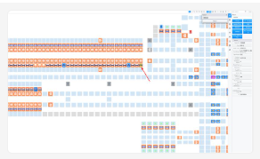
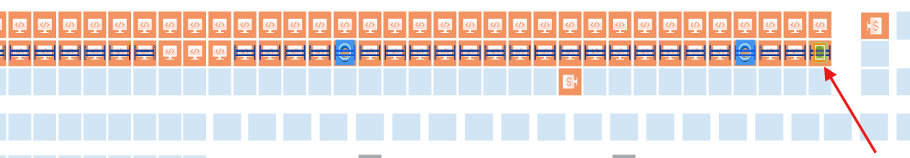

| Procedure ID | proc_recover_hospital_tote_flow_apidog_wcs_api_v1 |
|---|---|
| Title | Recover hospital tote flow using Apidog / WCS API and validate AGV operation |
| Procedure Type | recovery |
| Primary Role | L2_support |
| Support Safe | Yes |
| Capability Tags | tote_lifecycle_state, agv_physical_recovery, fleet_system_status |
| Access Surface | apidog, wcs_api, tipper_hmi, hospital_hmi |
| Audience Roles | L2_support, operator |
| Failure Pattern Tags | tote_error_noread_or_mismatch, zone_agv_mismatch |
| Validation Status | needs_sme_review |
| Merge Status | source_finalized |
For the UPS Haslet TX (TXRTH) hospital-station tote-induction condition, use the Tipper HMI / WebVisu / VISU to pause the station when operators are not present at the tippers, then use Apidog / WCS API to remove the inducted or disconnected tote state and recover affected AGV state. Validate tote add/remove operation on the Hospital HMI / lane UI, confirm affected robots are re-added and operating, and confirm the system is running. The incident did not establish a single definitive root cause or provide exact API request names, parameters, or AGV control names.
Use for a hospital-station condition where totes cannot be added or inducted, especially when an inducted tote or disconnected tote association is present and Apidog / WCS API recovery actions are identifiable on the live system. Coordinate the recovery with the Tipper HMI / WebVisu / VISU and validate the result on the Hospital HMI / lane UI.


Responsible role: operator
Instruction:
On the Tipper HMI / WebVisu / VISU, place the station on pause before recovery when operators are not present at the tippers.
Expected result:
The Tipper HMI / WebVisu / VISU shows the station in a paused state while recovery is in progress.
Stop or Escalate If:
Responsible role: L2_support
Instruction:
On the Apidog / WCS API client, identify the inducted tote associated with the hospital flow condition and use the source-supported tote-removal action. Use only the live request or action that is explicitly identifiable; the incident does not provide a request name or parameters.
Expected result:
The Apidog / WCS API response or live tote state shows that the identified inducted tote has been removed or is no longer blocking the hospital flow.
Stop or Escalate If:
Responsible role: L2_support
Instruction:
On the Apidog / WCS API client, inspect the affected AGV and tote association. For the documented tote 51 condition, use the source-supported API action when the tote cannot be removed from the hospital through the normal live operation. Do not infer or invent an API request name.
Expected result:
The Apidog / WCS API live state no longer shows the targeted disconnected tote association as blocking the hospital flow, or the API returns the supported removal result.
Stop or Escalate If:
Responsible role: L2_support
Instruction:
On Apidog / WCS API, identify the affected AGVs and use only the source-supported AGV recovery action to remove them from the obstructed state or location and re-add them as required by the live system state. The incident identified AGVs 1542188, 1555028, and 1555012, but the current live identifiers must be confirmed before any change.
Expected result:
The affected AGVs are no longer shown in the obstructed or incorrect association state on Apidog / WCS API, and the required robots are re-added to the live system roster.
Screens / Images:
Stop or Escalate If:
Responsible role: operator
Instruction:
On the Hospital HMI / lane UI, verify that the hospital station can add a tote and remove a tote again. Have L2 support observe the live result as needed.
Expected result:
The Hospital HMI / lane UI accepts both a tote-add operation and a tote-remove operation without the reported hospital induction restriction.
Stop or Escalate If:
Responsible role: L2_support
Instruction:
On the Hospital HMI / lane UI and the live Apidog / WCS API state, confirm that the affected robots have been re-added and are operating. Confirm that the system is running after recovery.
Expected result:
The affected robots are shown as re-added and operating, and the live system state is running.
Stop or Escalate If: